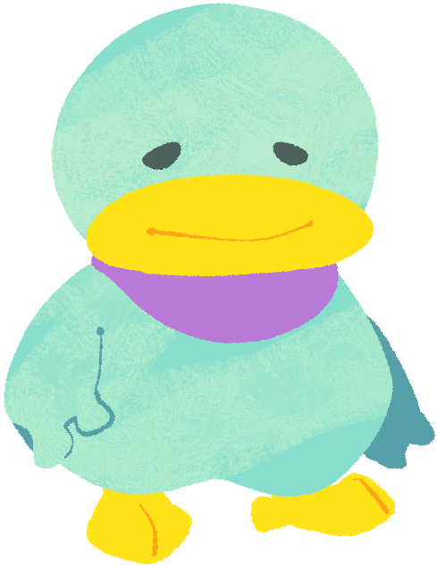

Hoyorin (Male)A slightly younger, fairly rounded brother of Kururin. He is the calmest member of the family, being very laid-back. His chill demeanor could come at a cost, where he may not take a situation too seriously, even when it needs to be addressed. |
 |